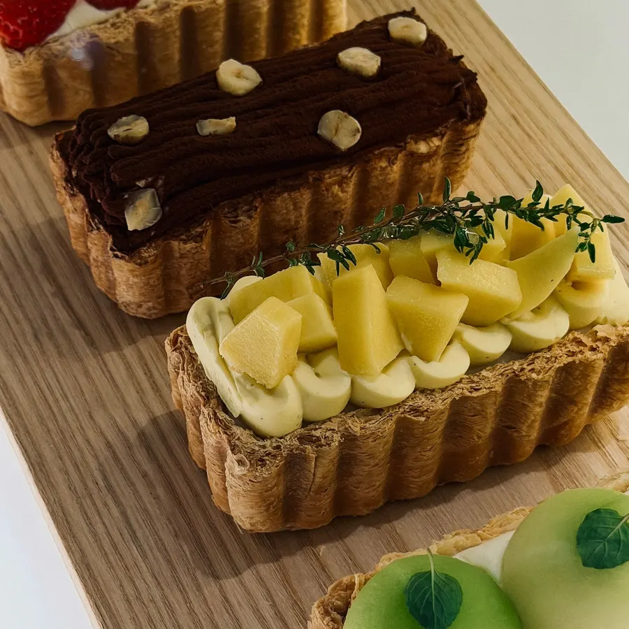
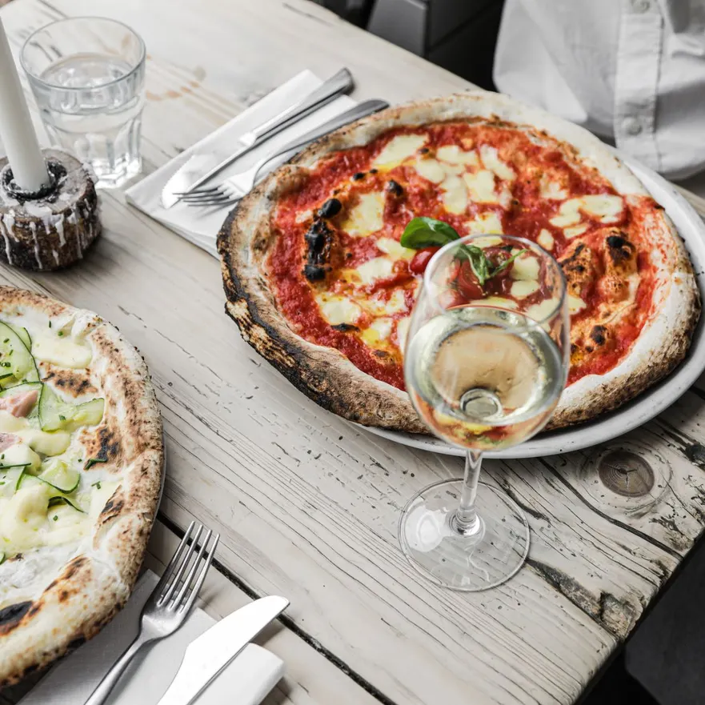
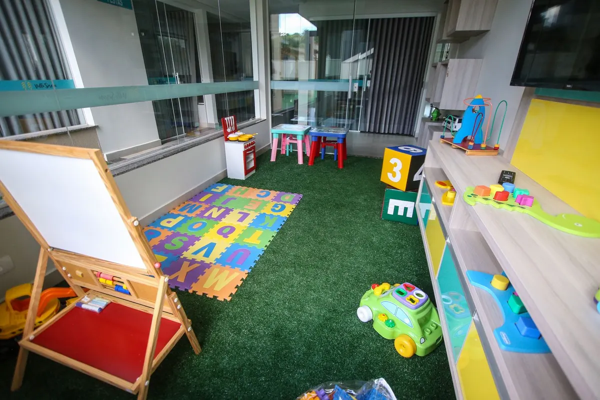

About Trigal
Open since 1988, any time of day.
More than thirty-five years with our doors open on Wheat Street.

Our story
It started with bread. It became a meeting place.
Trigal opened in 1988 and grew with the neighborhood: the bakery added pastries, lunch, a pizzeria and a soup buffet. Today it's open 24 hours, seven days a week.
Breads, savory pastries and sweets are all made in-house. It's where many locals have breakfast, grab lunch in the middle of the workday or meet friends at night.


Upstairs
Tables, pizza and soup.
Upstairs you'll find our dining tables and, at night, the pizza and soup buffet. Sunday to Thursday, 6 to 11 pm; Friday and Saturday, until midnight.
Kids' Corner
The kids play, you finish your coffee.
- Friday19h–23h
- Saturday and Sunday8h–13h e 19h–23h
